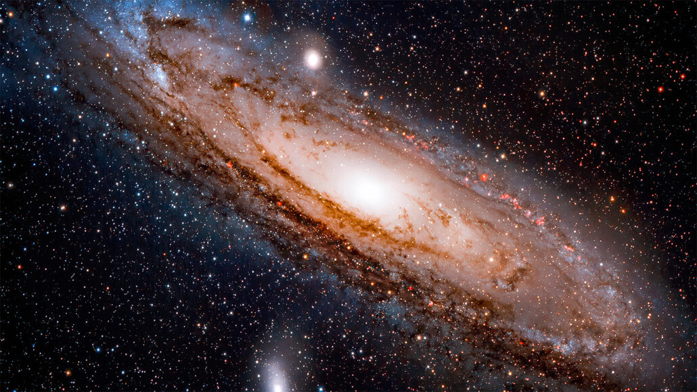

There are many Galaxies that humans have discovered over the past few
centruies. This great collection of stars and planets are balanced around immensely powerful black holes
that carry everything within them around the universe.

Explore The Universe
Mayall's Object. Also called VV 32 and Arp 148, this is a very peculiar looking
object, and is likely to be not one galaxy, but two galaxies undergoing a collision. Event in images
is a spindle shape and a ring shape.
Galaxy Cosmos Redshift 7 is reported to be the brightest of distant galaxies (z > 6) and to contain some of the earliest first stars (first generation; Population III) that produced the chemical elements needed for the later formation of planets and life as we know it.
Large Magellanic Cloud. This is the fourth-largest galaxy in the Local Group, and
forms a pair with the SMC, and from recent research, may not be part of the Milky Way system of
satellites at all.
Named Fireworks Galaxy due to its bright and spotty appearance.
The nitrogen in our DNA, the calcium in our teeth, the iron in our blood, the carbon
in our apple pies were made in the interiors of collapsing stars. We are made of starstuff.